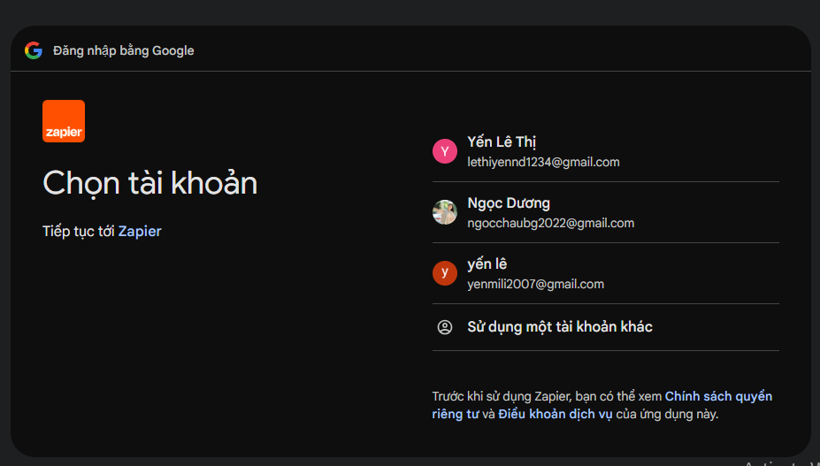

I. Mục tiêu
Bài thực hành nhằm tìm hiểu nguyên tắc hoạt động của tự động hóa quy trình làm việc và ứng dụng Zapier để kết nối các ứng dụng với nhau, từ đó giảm thao tác thủ công và nâng cao hiệu quả quản lý câu lạc bộ.
Thông qua bài thực hành, người học làm quen với việc xây dựng quy trình tự động giữa Google Forms và Gmail, đồng thời hiểu được tiềm năng của các công cụ tự động hóa trong học tập và quản lý.
II. Công cụ sử dụng
⚙️ Zapier
Đóng vai trò là nền tảng tự động hóa, kết nối các ứng dụng và thực hiện quy trình gửi email mà không cần thao tác thủ công.
📝 Google Forms
Được sử dụng để thu thập thông tin đăng ký của thành viên mới và kích hoạt quy trình tự động.
📧 Gmail
Được sử dụng để gửi email chào mừng tự động đến thành viên ngay sau khi hoàn thành biểu mẫu đăng ký.
III. Quy trình tự động hóa
📝 Bước 1 - Trigger
Thành viên mới hoàn thành Google Forms để đăng ký tham gia câu lạc bộ.
⚙️ Bước 2 - Zapier xử lý
Zapier tự động nhận dữ liệu từ Google Forms và kích hoạt quy trình đã được thiết lập.
📧 Bước 3 - Gmail
Gmail tự động gửi email chào mừng tới địa chỉ email mà thành viên đã đăng ký.
🎉 Kết quả
Thành viên mới nhận được email ngay sau khi đăng ký, giúp tiết kiệm thời gian và tăng tính chuyên nghiệp trong quản lý câu lạc bộ.
IV. Minh họa quá trình thiết lập
Quy trình thiết lập Zapier bao gồm các bước chính dưới đây.

(Hình minh họa quá trình thiết lập Zapier sẽ được chèn tại đây)
V. Lợi ích của việc tự động hóa
Việc sử dụng Zapier để tự động gửi email chào mừng giúp câu lạc bộ tiết kiệm đáng kể thời gian và công sức so với việc gửi email thủ công cho từng thành viên.
Ngay sau khi thành viên hoàn thành Google Form, hệ thống sẽ tự động gửi email với nội dung đã được thiết lập sẵn. Điều này giúp mọi thành viên đều nhận được thông tin đầy đủ, đúng thời điểm và tạo cảm giác chuyên nghiệp ngay từ khi tham gia câu lạc bộ.
Bên cạnh đó, quy trình tự động còn hạn chế sai sót trong quá trình gửi email, giảm nguy cơ quên gửi hoặc gửi sai thông tin, đồng thời vẫn hoạt động hiệu quả ngay cả khi số lượng thành viên tăng lên.
VI. Đề xuất các ý tưởng tự động hóa khác
📊 Tự động cập nhật danh sách thành viên
Sau khi thành viên gửi Google Form, Zapier sẽ tự động lưu toàn bộ thông tin vào Google Sheets để ban điều hành dễ dàng quản lý, tìm kiếm và thống kê.
📅 Tự động gửi thông báo sự kiện
Khi có lịch sinh hoạt hoặc sự kiện mới, hệ thống sẽ tự động gửi email thông báo đến tất cả thành viên với đầy đủ thời gian, địa điểm và nội dung chương trình.
📢 Thông báo cho Ban Điều hành
Mỗi khi có thành viên mới đăng ký, Zapier sẽ gửi thông báo ngay cho Ban Điều hành thông qua Gmail, Discord hoặc Slack để chủ động hỗ trợ thành viên mới.
VII. Kết luận
Qua bài thực hành, em hiểu rõ hơn cách Zapier kết nối các ứng dụng để xây dựng quy trình tự động hóa. Việc ứng dụng các công cụ tự động hóa giúp giảm các thao tác lặp lại, tiết kiệm thời gian, hạn chế sai sót và nâng cao hiệu quả quản lý.
Trong tương lai, các giải pháp tự động hóa có thể được áp dụng rộng rãi trong học tập, quản lý câu lạc bộ cũng như trong hoạt động của doanh nghiệp nhằm tối ưu hóa quy trình làm việc và nâng cao năng suất.